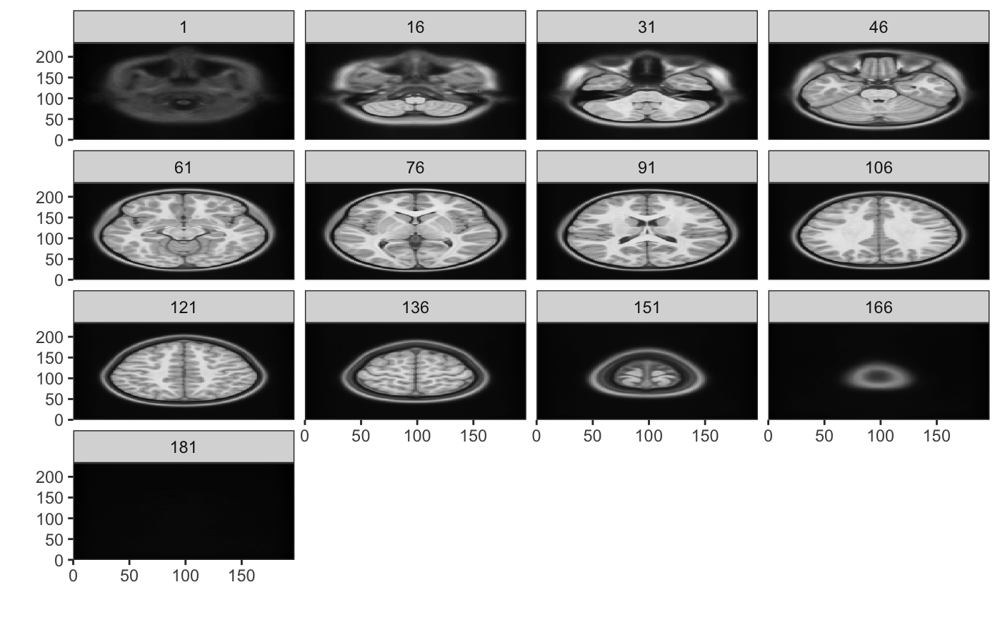

Information about the geometry of the image volume is shown here:
print(vol)
#> NeuroVol
#> Type : DenseNeuroVol
#> Dimension : 64 64 25
#> Spacing : 3.5 X 3.5 X 3.7
#> Origin : 110 X -110 X -46.2
#> Axes : Right-to-Left Posterior-to-Anterior Inferior-to-Superiorread_vol returns an object of class NeuroVol object which extends an R array and has 3 dimensions (x,y,z).
class(vol)
#> [1] "DenseNeuroVol"
#> attr(,"package")
#> [1] "neuroim2"
is.array(vol)
#> [1] TRUE
dim(vol)
#> [1] 64 64 25
vol[1,1,1]
#> [1] 0
vol[64,64,24]
#> [1] 0Arithmetic can be performed on images as if they were ordinary arrays:
vol2 <- vol + vol
sum(vol2) == 2 * sum(vol)
#> [1] TRUE
vol3 <- vol2 - 2*vol
all(vol3 == 0)
#> [1] TRUEA numeric image volume can be converted to a binary image as follows:
vol2 <- as.logical(vol)
class(vol2)
#> [1] "LogicalNeuroVol"
#> attr(,"package")
#> [1] "neuroim2"
print(vol2[1,1,1])
#> [1] FALSEWe can also create a NeuroVol instance from an array or numeric vector. First we consruct a standard R array:
Now we reate a NeuroSpace instance that describes the geometry of the image including, at minimum, its dimensions and voxel spacing.
bspace <- NeuroSpace(dim=c(64,64,64), spacing=c(1,1,1))
vol <- NeuroVol(x, bspace)
vol
#> NeuroVol
#> Type : DenseNeuroVol
#> Dimension : 64 64 64
#> Spacing : 1 X 1 X 1
#> Origin : 0 X 0 X 0
#> Axes : Left-to-Right Posterior-to-Anterior Inferior-to-SuperiorWe do not usually have to create NeuroSpace objects, because geometric information about an image is automatically determined from information stored in the image file header. Thus, NeuroSpace objects are usually copied from existing images using the space extractor function when needed:
When we’re ready to write an image volume to disk, we use write_vol
write_vol(vol2, "output.nii")
## adding a '.gz' extension results ina gzipped file.
write_vol(vol2, "output.nii.gz")We can also display a NeuroVol instance. Lets download an MNI image from the web and plot it.
temp <- tempfile()
uri = "http://www.bic.mni.mcgill.ca/~vfonov/nihpd/obj1/nihpd_asym_07.5-13.5_nifti.zip"
download.file(uri,temp)
cmd <- paste("unzip ", "-d", dirname(temp), temp)
system(cmd)
vol <- read_vol(paste0(dirname(temp), "/nihpd_asym_07.5-13.5_t1w.nii"))
Now we can display it using the plot command. We will show every 15th slice.
